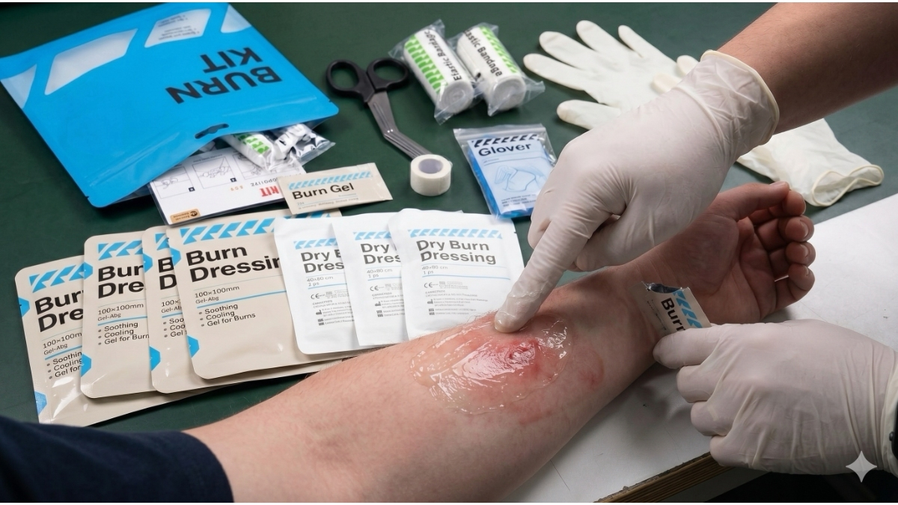

Beyond Traditional Gauze: Why Firefighting, Electrical Utilities, and Welding Sectors Demand Isolated Burn Care Logistics
MAY 30, 2026

When an emergency coordinator or safety manager in high-risk sectors—such as industrial welding, electrical power utilities, or municipal firefighting—evaluates trauma readiness, burn mitigation must be a standalone priority. Whether dealing with a severe electrical arc flash, a heavy industrial slag splash, or structural fire entrapment, thermal trauma creates a unique clock: the subcutaneous tissue continues to cook internally even after the external heat source is eliminated. If an enterprise relies on a generic, multi-purpose first aid kit during these critical initial minutes, they are introducing massive operational and liability risks.
Traditional commercial first aid boxes are notoriously disorganized, blending daily band-aids with tactical medical supplies. Under severe human panic, forcing a technician or first responder to sift through a chaotic bag to locate cooling treatments introduces fatal delays. Furthermore, standard dry cotton gauze—the most common filler item in generic kits—is a catastrophic medical error for firefighting and industrial burn response. Standard gauze fibers melt directly into an open, weeping burn wound, effectively welding themselves to raw nerve endings. This results in horrific secondary tissue-tearing trauma and intense agonizing pain when emergency medical services (EMS) or hospital staff attempt debridement.
True risk mitigation within heavy industry and emergency rescue supply chains requires a target-specific system that completely separates airway management, massive hemorrhage control, and thermal trauma. The GoSafeMed Burn Care Module is engineered precisely to resolve this specific workplace vulnerability through strict component isolation.
Halting the Cellular “Cooking Effect” in High-Risk Workspaces
A severe thermal wound requires immediate, waterless heat extraction. For field operators in electrical utility maintenance, forestry firefighting, or heavy metal fabrication, running water is rarely accessible at the exact moment of an incident.
Our independent module counters this tactical gap with the GoSafeMed Burn Dressing (x4) and Burn Gel (x8). These are not basic consumer creams; they are professional-grade, high-viscosity hydrogel systems. The moment our pre-saturated, sterile Burn Dressing is applied to the wound site, it initiates an immediate thermal transfer process, drawing deep tissue heat away from the raw dermis and trapping it within the water-soluble gel matrix. This halts the deep cellular “cooking effect” in under five seconds, shielding exposed nerve endings from air currents to instantly collapse the patient’s shock response—all without requiring a plumbing grid.
Defeating Infection Liability in Industrial and First Responder Sectors
Once the initial cooling phase is achieved, the primary clinical threat shifts rapidly to bacterial contamination. When skin layers blister and peel during an industrial or firefighting incident, the body’s primary immune shield is entirely gone, opening a direct highway for fatal systemic infections and sepsis.
To eliminate this exact liability for commercial employers and safety procurement officers, the module features the GoSafeMed Dry Burn Dressing (x4). This specific component is completely separate from the wet hydrogel dressings. It is an engineered, lint-free, completely non-adherent protective shield. It provides a highly specialized sterile barrier that locks out environmental debris and toxic smoke particles common in welding and fire environments. It ensures that when advanced medical care takes over, the dressing lifts off the open flesh seamlessly without sticking to the healing tissue, preventing secondary debridement trauma and significantly reducing long-term employee recovery timelines.
The Sourcing Reality for PPE and Industrial Safety Distributors
For corporate health and safety officers, global PPE procurement managers, and international firefighting equipment distributors, buying first aid inventory is not a box-ticking exercise. A generic kit creates a false sense of security that fails under the stress of heavy industrial trauma.
Integrating the independent GoSafeMed Burn Care Module into your enterprise supply chain means you are investing in an engineered clinical protocol. By equipping your teams with highly isolated, component-specific configurations like specialized Burn Dressings and non-stick Dry Burn Dressing options, you protect your organization from compliance liability, satisfy strict workplace safety mandates, and ensure two-second accessibility when chaos hits the job site.